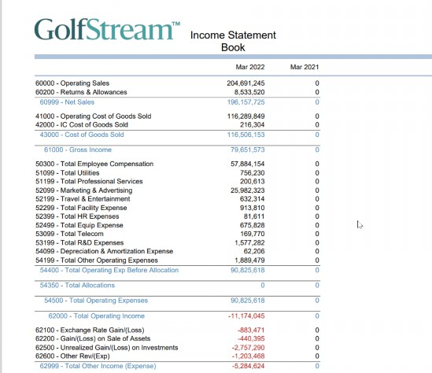
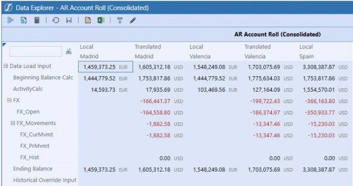
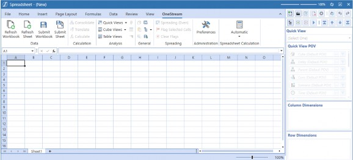
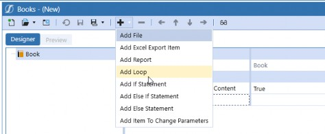
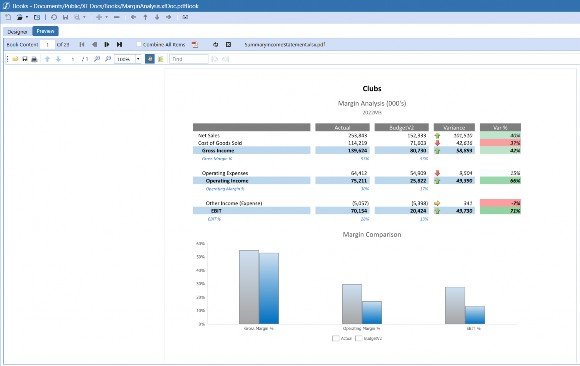

The Moving Pieces
This chapter will take a deeper look at the reporting aspect of the User Experience. Picture this: you have just taken the time to determine your requirements for creating your
OneStream application, and you have it all jotted down in a beautiful requirements matrix. Now you are getting ready to design how your OneStream application will look and create something sleek and effective for your End-User. So, you… build 1,000 Cube Views!
Just kidding, let’s back up for a minute.
We have fully vetted the Users we are building for, and know what will make their experience effective (be aware there will be some back and forth as that happens); the next thing to do is take an inventory of the tools at your disposal at OneStream, to try to visualize what will get the job done.
If you want to feel prepared going into any OneStream design, then having a well-rounded view of what OneStream has to offer will allow you to visualize what you can do, plus give you some peace of mind. Taking an inventory of what OneStream has to offer with out-of-the-box functionality and knowing when and why to use these solutions/methodologies will prepare you for almost anything that can get thrown at you. That may sound like I just said, “It’s easy! You just have to know EVERYTHING”, but having a rough demonstration of common use cases for a wide variety of things is all you need to get started. Even if you don’t know how to use a specific tool just yet, there is probably someone in your network that does.
Let’s get into the reporting aspect. OneStream has an abundance of tools at your disposal that can help you satisfy your reporting requirement: Cube Views, Excel Add-in/Spreadsheet, and Dashboards, to name a few. Deciding which tool handles which requirements is what sets you up for success on your project, and creates the most unique and rewarding User Experience. You already know that we want to think about the User when designing their experience, but when it comes to reporting we also want to think about two other things:
The types of data we are pulling
Metadata design
Interestingly, these two things create a bit of a ‘chicken or the egg?’ situation. Data and metadata requirements impact your Report design, and reporting requirements also tend to impact your metadata design. Clear as mud? Don’t worry; we’ll get you there!
The Moving Pieces
Types of Reports
There are myriad reporting tools and User Experiences that we will discuss in this book. OneStream not only has the capability to present a wide variety of data in many flexible and interactive ways, but it also has built-in capabilities to Report on administration states (Workflow statuses, Task Activity, etc.) and granular audit trails. Two of the most common (and important!) types of reporting we see in OneStream are Financial Reporting and Management Reporting. Let’s take a closer look.
The Moving Pieces › Types of Reports
Financial Reporting
Financial reporting is a great place to start our reporting journey. I find the associated requirements to be truly indicative of what almost every client will be faced with delivering at some point in their OneStream journey.
Typically, these reporting requirements are the focal point of your Financial Consolidation projects, but they are also commonly addressed during Financial Planning implementations. This is where we see many of our clients spend the bulk of their development hours in phase one implementations. I have seen many Planning projects where some sort of effort is required to get these Reports up and running, even if the data is simply loaded and used for variance analysis.
Typical Financial Reports are Income Statement, Balance Sheet, and Statement of Cash Flows. It’s likely that there will be a combination of both summary and detailed iterations of each of these Reports, and varying columns of dimensionality used to explain the Account structure along the way. The overarching goals of these Reports tend to be the same for all businesses: to illustrate the financial performance and standing of the business. There is little variability in these Reports, as they are widely adopted and required as part of reporting compliance.
Every project and client is different, but these types of Reports tend to be a little more run-of-the-mill; they are standardized, and something you will quickly grow comfortable with building.
They’re also great for someone who is getting their feet wet with OneStream implementation and administration.
If Financial Reports were an outfit, I would say they are a nice black dress or suit. Almost everyone has one; they are usually your go-to when you want to dress up or look professional, and they are easy to pull off. Don’t be fooled, though. Even though they are simple, we want them to be sleek, elegant, professional, flawless, and dynamic. Before you pour yourself a martini, you better watch out for those deodorant marks and get that lint roller ready!
First, the formatting for financial Reports is essential. You will almost certainly use row/column formatting, consistent headers and footers, and simple Calculations. More advanced Reports may add charts, buttons, and complex Calculations and variances. Also, most of these Reports will require some form of User prompt (known as a parameter) which helps Users make their dimensional selections and guides them to the right data.
The second challenge you are going to encounter is the sheer number of Reports you will have to configure. There are typically multiple versions of your financial Reports, so – when faced with this situation – you must think of two things: maintenance and speed. The last thing you want is a situation where you must change many Reports in a hurry; this is where templates become critical in building an efficient solution that is easy for anyone to maintain.
Figure 3.1 shows an example of the formatted PDF version of a Cube View. This Cube View is being used in a PDF Report Book that is meant to compile our fictional demo example company GolfStream’s Financial Statements. We will talk about Report Books in OneStream a bit more in this chapter and later ones.

Figure 3.1
The Moving Pieces › Types of Reports
Management Reporting
Management reporting’s goal is to provide the leadership team with key information to monitor performance and operations. This is what Managers need to see to make important business decisions. Typically, we can expect to see a combination of financial and operational information in these Reports, and they come in a variety of shapes and sizes.
This is where our Report tools can really start to flex. Because we are trying to create something that helps people quickly see, gauge, and assess the performance of the business, we want to be paying extra attention to our User. Is this User an Executive who wants a Dashboard that flashes everything they need to see quickly? Do they need to drill in further to see underlying data and details in OneStream? Are they using this to build presentations to display to stakeholders? How often is this data expected to change? All these questions are useful in designing delightful Management Reports.
If financial reporting is a black dress, management reporting is high fashion! We can start to design customized Reports with wild features and a ton of flair. This is where we want to start introducing things like interactive Dashboards, flashy charts that you can click into and see more detail, gauges, and more – whizz, bang, boom, POP! Something that tells a story in a quick second but keeps the information at your fingertips and serves as a one-stop shop for all the information the intended target User needs.
The challenge that we have to cross with this style of reporting is choosing between the many reporting options in OneStream. You will get the chance to see what we are talking about in later chapters, but it can require you to think outside the box in the creation of these Reports. Budget a few extra hours in your project plan dedicated to exploring, iterating, and learning how to design and build management Reports. If you are not going to administer the Reports once built, try to simplify the design and keep the Reports maintainable for the next person. This requires designing with both the customer and Administrator in mind.
Data model design is the next management reporting challenge. Management Reports typically use lots of data from many sources – multiple Cubes, Extensible Dimensionality, or even Analytic Blend. Striking a careful balance between performance and design is a skill you must hone over time. It may sound daunting to orchestrate these systems, but OneStream has the tools and options you’ll need to give Users beautiful Reports chock full of the data they need.
The Moving Pieces
Reporting Tools
The Moving Pieces › Reporting Tools
The Reporting Tool: Cube View
Now – for your most common Report – what is more fitting than a Cube View? Here it is, the moment we have all been waiting for, the first time we talk about Cube Views. We will get into this a little more later, but right now, I am literally picturing a Cube View descending a staircase with dramatic music playing in the background as if it’s a starring cast member in the original Dynasty soap opera.
If you have not heard about them just yet, a Cube View is exactly what it sounds like: a picture of Cube data. Not everyone thinks this way, but my advice to anyone starting any Report development is to start with a Cube View. My reasoning is that a Cube View can turn into anything, so why not start here? Typically, they will be your best way to handle most of your financial reporting requirements because they respond well to the challenges I laid out in the prior section:
They are easy to build and maintain.
They can be heavily formatted.
They are typically the most performant option.
They can be easily accessed across the application.
Figure 3.2 shows a simple but highly-formatted Cube View in the Data Explorer View (or Grid).

Figure 3.2
The Moving Pieces › Reporting Tools › The Reporting Tool: Cube View
They are Easy to Build and Maintain
Cube Views have a lot of properties. This may sound daunting, but rest assured, this just demonstrates the possibilities of how intricately you can format your Reports. They are not difficult to stand up quickly. I bet if you knew the dimensionality and data in an application, I could get you to stand up a halfway decent Cube View in under five minutes.
When teaching someone to build their first Cube View, I always start with setting your Cube View POV, rows, and columns. Once you have that lined up, you are ready to tweak and tinker until you have every requirement beautifully fulfilled. Because of this, whenever you are tasked with building 30-400 Reports, I would recommend you make the majority of them a Cube View.
Building a Cube View is excellent for anyone getting started with reporting. If you think about it, what better place to start than the end result? It’s even better to get someone on the client side (like an Admin or a Power User) to get involved early on. This goes beyond needing more hands to accomplish the amount of work, as a Cube View builder gets great exposure to the dimensionality of the system. It is also how you learn the data model of your application, and being hands-on will help someone learn how to troubleshoot data validation issues or Calculations.
The real reason why it is great to get someone from the client team involved in building your Cube Views is our cardinal rule of driving the End-User Experience; they know the End-User better than anyone external, and they may be one of the Report’s consumers. Who better to empower and enable on your team than the person who will be the most passionate about getting it right?
Early in my career, I was one of the Cube View builders, and I had my client sit me down and say, “Okay, I am going to tell you the story of these Reports.” It stuck with me. She was so passionate about how the Users needed every single Report and how they would use them.
| Note: There is a lot of pressure in our field to feel like you know everything, but you can’t. And leaning on someone else’s experience and fostering that team environment between Clients/Consultants/End-Users is how you truly create the best result together. There are people who know more than you in the room; let yourself be vulnerable, and don’t be afraid to ask questions. It will make you more creative and open to ideas! |
Alright, I got a little dramatic for a second there; sorry about that. Building and maintaining should always go hand-in-hand with anything in your implementation. Not just for your own sanity, but for the sanity of whoever must own what you create after you leave (and that may be you, depending on your role in the project). The art of building and organizing Cube Views is something that requires a bit of upfront planning. So, ‘take the time to take some time’ and nail down things like common formatting, common prompts, headers and footers, and whatnot ahead of time.
Once you have your bearings, here are a few tactics you can use when building Cube Views to reduce your maintenance:
Start with a template.
Share rows and columns.
Use your groups and profiles wisely.
Employ Literal Value Parameters and conditional formatting.
Think of your metadata; use dynamic expansions such as
.Childrenand.Base.
I am sure that people can come up with a lot more than that. But we will take a deeper dive in the Cube View section of this book. Lucky you!
The Moving Pieces › Reporting Tools › The Reporting Tool: Cube View
They can be Heavily Formatted
A significant portion of reporting is creating something visually appealing to the User community that resonates with their business branding and mission. Usually, with financial reporting, we are hoping for a polished and professional PDF. Cube Views have the inherent capability of allowing you to configure the displayed format of the Data Explorer Grid, Excel, and PDF export versions, all separately. And, if you employed my advice of setting up your formatting ahead of time, you can create a consistent look and feel throughout all Reports that are easy to maintain and repeatable.
Whenever I start my Cube View formatting, I remember my order of operations:
Application Properties (there is a tab in there for standard Report options)
Defaults and page formatting
Column header/cell formatting
Row header/cell formatting
You will want to start with your standard formatting, and you can override this at various points as you move down the order of operations list. Therefore, it is important to get the discussion going with formatting as soon as possible; to reiterate my point once more, set yourself up for success early on, so you don’t have to chase things down later. Starting with a template is a great way to tinker with all those properties for your FIRST Cube View only. Then, you can create copies and share rows and columns as you move forwards.
On the other side of this is the granularity of how a Cube View can be formatted. There are always a few problematic Cube Views that take a little more love than we hoped. But that’s okay; that’s why we have things like:
Row/Column overrides: Can be used to bypass the natural order of operations to grant you the capability to perform more granular cell-by-cell formatting and/or querying.
Cube View Extender Rules: A type of Business Rule that can be written on the Business Rules page – or directly on the Cube View – to write complex, intricate formatting on the PDF version of the Cube View that cannot be done in your typical settings (e.g., header/footer control, logo control).
Conditional Formatting: Can be applied for more dynamic formatting based on the data or the Components of the Cube View (e.g., if the cell is greater than 100, color the background red; or color the even number rows gray).
XFBR (Or
DashboardStringFunctions): A type of Business Rule that grants you more flexibility than your typical parameters.Custom Member Lists: A type of Finance Business Rule to create your own Member Lists if the existing Member Expressions don’t meet your requirements.
These items are great tools to get familiar with in order to take your Cube Views to the next level! But the one thing you can always do with Cube Views is integrate them into other reporting options easily:
Cube Views can be data adapters in Dashboards.
Cube Views can be Components in Dashboards.
Cube Views can be added to Report Books.
Cube Views can be pulled into Extensible Documents.
Cube Views can be added to the Excel Add-in and Spreadsheet tool through Cube View Connections.
Cube Views can be linked together via Navigation Links.
The Moving Pieces › Reporting Tools › The Reporting Tool: Cube View
Performance
Cube Views are our most performant option when creating Reports. We typically think of performance in two spaces: our Consolidation performance, and our reporting and general navigation performance. Each is extremely important when creating our End-User Experience. It is a simple fact of life that no one likes to wait, especially in the tech space. I can get frustrated when I have to wait and remember a time when I was in the OneStream office furiously clicking around on my laptop. I had way too many things open and was expecting everything to work instantaneously. Someone had to shout, “Okay, Clicky! Calm down over there!” to get me to snap out of it.
Now, I may not be the most patient person, but if I know that then I KNOW someone out there will be the same (and probably worse). So, do your best to remove the frustration and design for performance; you are really designing for your User Experience when you think about it.
Cube Views are a great default option when you want to pull larger amounts of Cube data. However, we typically recommend that you keep your eyes peeled should a Cube View run for more than five seconds. When that starts happening, we recommend effectively using your Sparse Row Suppression settings, limiting the number of dynamically-calculated items in the Cube View. In a worst-case scenario, consider breaking up the Cube View. You can learn more about these options in the Cube View chapter of this book, and the reporting chapter in the OneStream Foundation Handbook.
The Moving Pieces › Reporting Tools › The Reporting Tool: Cube View
Easily Accessible Across the Application
The final item that makes Cube Views great is that they are very easy to bring to our User. Cube Views themselves are a particularly viable tool, and because of their flexibility and intricate formatting, they are often great on their own. Cube Views have the additional capability to be added to other pages in the application through Cube View Groups and Profiles. This allows us to bring Cube Views directly to the User through the OnePlace tab, into the Workflow, and many other places. We will cover this concept in detail in a later section.
Cube Views don’t just have to stand alone; they can also be incorporated into Extensible Documents, Spreadsheet/Excel Add-in, Dashboards, Form Templates, and Report Books. We will talk about this concept a lot, but don’t be surprised when our little Cube View follows you wherever you need to go!
The Moving Pieces › Reporting Tools
The Reporting Tool: Excel/Spreadsheet
The Excel Add-in is a fan favorite. A lot of our clients are extremely comfortable in Excel and even have in-depth exposure to other software’s Excel Add-ins. But if you have not had a chance to hear of ours, or work with it, the OneStream Excel Add-in is an option that allows you to query real-time OneStream data from the comfort of Excel!
OneStream also has a tool called Spreadsheet that is almost exactly the same but gives you the ability to take the Excel Add-in’s functionality – as well as the functionality of Excel itself – and place it within the OneStream application. This is handy if you don’t want to go all the way to Excel or want to bring that comfort into your Forms and Dashboards. It’s also nice if you are like me, and constantly forgetting to upgrade your Excel Add-in, and you need a second option!
So, what are the best things about the Excel Add-in/Spreadsheet?
Allows you to grow your population of builders.
Multiple options with how you want to query data.
Greatest flexibility with formatting and Calculations.
Figure 3.3 shows the Spreadsheet tool within the OneStream Windows application when it is first opened.

Figure 3.3
The Moving Pieces › Reporting Tools › The Reporting Tool: Excel/Spreadsheet
Allows You to Grow Your Population of Builders
Now, this is a tricky space for us. Typically, in our implementations, we try to encourage people not to rely on Excel as much as they possibly can. Our reasoning behind this is that if the software can do it for you… let it! You have a flashy new piece of technology; you should be enjoying it and removing as many of the manual aspects of your old life as possible.
But Excel is something that many people in the Accounting and Finance Department live in, and it is powerful and flexible. So, it is important to enable your Users to work with Excel and OneStream in ways that will allow them to create their self-serviced Reports and queries.
This brings us back to our cardinal rule – know your User. I always take some time with my clients on the project team to get them playing in Excel as early as possible. The first reason I do this is because it is a great tool for validating data, an important phase of the project that should be owned by the client as much as possible. The second reason is that your client will be able to champion this side of the project and get your End-Users into OneStream. If you are an Implementor, no matter how well you know Excel and the Excel Add-in, your client will know how their population uses it and how to create training and messaging that makes them comfortable and enables them to get going with their new tool. Make it easy on them and yourself.
The nature of Excel, paired with these tricks, means that you can get a lot of people building quite quickly. Not only is it easy to use and frequently in the comfort zone of a lot of people, but the Excel Add-in does not reside in the Application tab, meaning that it is something many people can build and play with; the only security rights required are access to the data.
I typically recommend the Excel Add-in when trying to query any data ad hoc, or when building variations of Reports used by only a small subset of the End-User population. Although Cube Views are not hard to update, if you are an Administrator and you have Users within your business who are constantly requesting updates to the Cube Views that you or your Consultant have created, you may want to empower your End-Users. It doesn’t work for everyone, but if you are weary of giving security access to updating Cube Views, and you are finding more people saying, “Can I just do it? Let me at it!” then the Excel Add-in may be a nice way to complement your Report-creation endeavors.
The Moving Pieces › Reporting Tools › The Reporting Tool: Excel/Spreadsheet
Multiple Options
The other great side of the Excel Add-in is that you have more than one option for querying data. Whenever I start any training on the Excel Add-in, I always open with the fact that you have three options when querying data: Quick Views, Retrieve Functions, and Cube View Connections. These options give you a few different ways to query your data, which allows your Users to determine how they want to pull data out of OneStream.
Quick Views are usually where people want to dive in, because they are basically like simple Cube Views. Quick Views allow you to set your Quick View POV, rows, and columns to ‘quickly’ pull some data. There are some formatting options, but typically they don’t have to be gorgeous if you don’t want them to be. These are great for no-nonsense pulls of data.
Retrieves are a bit different. These are your XFGetCell formula-based functions that allow you to pull data – cell by cell – into Excel. But the magic doesn’t stop there; you can also use functions to retrieve Member properties like text properties, descriptions, local currency, and so much more. I typically recommend retrieves for data validation, but they can potentially be used for final printed Reports as well. They can be easily integrated into your Report Books and Dashboards, too.
Cube View Connections are a nice third option if you are trying to adjust an existing Report or want to use it as a launching point. Cube View Connections allow you to pull a live connection of an existing Report into the Excel Add-in. The other great option for Cube View Connections is working them into your data entry options as well.
The Moving Pieces › Reporting Tools › The Reporting Tool: Excel/Spreadsheet
Greatest Flexibility with Formatting and Calculations
This section is going to shine a little light on Retrieve functions, specifically. Before I dive in, I want to point out one thing, retrieves do not exhibit as good a performance as your Cube Views. However, one thing that may drive you to consider building a Report out of retrieves (instead of Cube Views) could be limitations in your Calculations and formatting options. These situations are usually few and far between, but because files can still be added to Dashboards, Extensible Documents, and Books, this is not a bad option to pull out on some of your more cumbersome Reports.
One of the things that can greatly hurt the performance of your Cube Views is to add a lot of dynamically calculated (calc on the fly) cells. This is because these data points are actually generated when the Report is run. This is common in our Reports, and we want to avoid having too many overcomplicated Calculations in one Cube View Report. It can hurt the performance of the Report, and it can really hurt your maintenance as well. Think about it, unwinding a very complex Calculation with multiple overrides or rules will likely jeopardize your Report’s shelf life.
To prevent this, a great option could be to write this Report in the Excel Add-in. There are a lot of simple Calculations, summations, and averages that you can easily do in the Excel Add-in that can relieve the performance pressure and maintenance on your Cube View. I usually suggest this option as a last-case scenario, though, because Cube Views are very powerful.
Another consideration could be some hands-down formatting requirements that may be more BU-or business line-specific. Trying to tear about a Cube View can be a maintenance nightmare, when this may be an easy Report to pass to the User, which they can maintain.
All of these considerations should be evaluated on a case-by-case basis, but when it comes to creating a User Experience, it is best to learn our tools as best you can and try a few things. That’s the finest way way to get the ideas flowing within your project team.
The Moving Pieces › Reporting Tools
The Reporting Tool: Dashboards
Now things are really going to get interesting; Dashboards are in the picture! If I picture a Cube View elegantly descending a staircase, I picture a Dashboard busting through a wall like the Kool-Aid man. Dashboards seem to be the object of everyone’s deepest fears and desires. Clients want them, Consultants want to build them, but there is a shocking number of people afraid to attempt them.
The reason behind the fear makes logical sense; there are a lot of pieces that go into building Dashboards, and people put a lot of pressure into learning every single nugget to be successful. My advice – learn how to build one Dashboard at a time. The reason being that they have so many use cases and so many directions they can go. Each Dashboard can look 100% different from another and serve a completely different purpose from an entirely different User’s perspective. After all, how wild can you really get with a Cube View?
But really, let’s think about this. You can use a Dashboard to create a cool landing page for your
Users, control the various Consolidations/Calculations that Admins need to run, build a fun Form that gives your Users more flexibility, show stylish charts and grids to display KPIs and ratios, display a full SKU Report, or perform ad hoc analyses on non-Cube data. Heck, all of our MarketPlace solutions are made using Dashboards, so they can go from simple pivot grids/printed Reports to full-blown Workspaces.
No wonder people can get intimidated! But if you are new to Dashboards, the reality is you have to start somewhere. Because they have so many use cases, I recommend you take them one at a time, as that will make the experience feel more manageable. But don’t forget our rules: know your tools and know your User.
Knowing your tools is where Dashboards get tricky since there are so many options. Start by pulling apart existing Dashboards or MarketPlace solutions. Get into the guts and pull out the pieces you like, and see what can work for your situation.
No matter how they are used, Dashboards have a few key benefits that you will want to keep in the back of your head when deciding if they are the right answer to your requirement:
They allow you to integrate multiple reporting/data entry options.
Are necessary when querying non-Cube data.
Can run “jobs”.
The Moving Pieces › Reporting Tools › The Reporting Tool: Dashboards
They Allow You to Integrate Multiple Reporting Options
Dashboards have a definite ‘wow’ factor; that is why so many clients want them incorporated into their applications. But the decision to use a Dashboard should be based on more than wanting ‘something pretty.’ Just like everything you design into your OneStream application, your Dashboard Components should have a purpose.
We typically break Dashboards into two categories: Dashboard Workspaces and Dashboard Reports. Your Dashboard Workspaces are what people normally picture. They incorporate buttons that can run data management jobs (Consolidations, custom calculates, exports, copies, etc.), interactive charts that link to various other Report types, grids, logos, combo boxes – you name it. Basically, a number of combinations of Dashboard Components (or items if you are using BI Viewer) to create a multi-faceted User Experience. They remind me of your quintessential Dashboard on your car, or an airplane if things really go wild!
But Dashboards don’t always have to be huge. Enter your Dashboard Reports. I consider these more like Dashboards that only have one or two Components. They can be things like your Book Viewer for Report Books, File Viewer, Cube Views, Reports (formerly known as Studio), large data pivot grids, Grid View, and/or Data Explorer Reports.
The Moving Pieces › Reporting Tools › The Reporting Tool: Dashboards
Are Necessary When Querying Non-Cube Data
Dashboards are a great option if your OneStream application is using Analytic Blend, which many of them do. Remember, Analytic Blend is the act of reporting on data stored in the Cube with data stored outside the Cube. Basically, if you are trying to query any data that is not in the Cube, then you NEED a Dashboard!
Even if you are not using BI Blend itself, if you are using any MarketPlace solutions like People Planning, Thing Planning, OneStream Financial Close, or if you would like to query things like Stage data, you likely have some Dashboard Reports you are already using. Many of these Reports come built for you from the MarketPlace, but you have the ability to modify them using the Dashboard Maintenance Unit / Report Designer, or you may even find you would like to create your own. The Dashboard Report Component, large data pivot grids, Grid Views, and more are great tools to get you going.
The Moving Pieces › Reporting Tools › The Reporting Tool: Dashboards
Can Run “Jobs”
Now Dashboards are not just all flash; they have quite a bit of substance too. A common use case for a Dashboard is for data entry and Admin Workspaces. That’s because they don’t just give you that cool cockpit feel, but because they can run data management jobs, as well, meaning that an
Admin User can do things like easily trigger sequences of ‘heavy lifting’ processes with the click of a button.
When thinking of data entry, specifically, Dashboards are a common answer for Budget and Forecast requirements. This is because you may want to layer things like allocations, driver-based Calculations, and seeding into your data entry Forms. A simple Dashboard button can allow you to run these items and keep everything your Planning Users need at their fingertips.
The Moving Pieces › Reporting Tools
The Reporting Tool: Extensible Documents
If you have never heard of Extensible Documents or if you have never implemented them, I recommend just giving them a try. They are probably the most mysterious of your reporting options, but they are really very easy to configure. Extensible Documents allow you to create a PowerPoint, Excel, and/or Word document that can display real-time OneStream data, Cube Views, Charts, or Excel Reports, and which can even refresh based on User selection.
If that didn’t make sense, let me illustrate a world where you are the envy of all because you know how to make an Extensible (or XF) Document. Picture yourself strutting into a conference room, laptop in hand, flinging open your laptop, plugging in to display on the large screen, and you have your typical Monthly Presentation projecting trends, KPIs, etc. But this time is different. On this occasion, you have spent no time preparing a slide deck; this time, you’re not displaying any ordinary PowerPoint; you are displaying an Extensible Document. And this PowerPoint has been configured to update all data, graphs, charts, even titles based on your OneStream Dimension Member selections. On top of it, you know this data is correct because it was pulled freshly out of OneStream right when you made your selections.
Extensible Documents tend to be used for specific purposes; that’s why I recommend giving them a try so you know when they can get you out of a pinch. There is really one primary reason why you may choose Extensible Documents: their ability to integrate with PowerPoint, Word, and Excel.
The Moving Pieces › Reporting Tools › The Reporting Tool: Extensible Documents
When to Use Extensible Documents
We are going to break this one down a little differently to the other reporting tools. I am going to walk you through why you may want to use each type of Extensible Document: PowerPoint, Word, or Excel. We already illustrated the common reason to use PowerPoint Extensible Documents in the prior section.
Let’s start with Excel since it tends to have a more elusive set of benefits. You may be thinking: we have the Excel Add-in; why would we need an Excel Extensible Document? Well, the one thing that Extensible Documents add is the ability to incorporate parameter and substitution variables into your Excel Workbooks. Technically, you could do this when using a Cube View connection, but in a regular Excel Add-in you don’t have the luxury of referencing these items in your retrieve formulas. You could make a prompting Excel Report using Extensible Documents.
The reason why I start with Excel is because these Extensible Documents tend to be used differently to Word or PowerPoint. They can stand alone as a sheet or Workbook, but they are commonly used to feed your Word and/or PowerPoint Extensible Documents. Both options have the ability to take an image (yes, any image!), and when that image is run through OneStream it will transform to potentially display a sheet or named range of the Excel Extensible Document. In summary, there are two good reasons to use Excel Extensible Documents – to create dynamic Excel Reports, or to elevate your Word/PowerPoint Extensible Documents.
Word Extensible Documents work nicely with Report Books (covered in the next section). A common use case for them is to create a cover letter for your financial reporting packages. You can easily reference data points that can refresh based on the data changing or upon prompts that you can set once and never update. You can even reference XFBR strings if you need to home in on what you want to display as well. You may want to spice up these letters with a live Cube View or Dashboard Chart; what have you!
The Moving Pieces › Reporting Tools
The Reporting Tool: Report Books
I think of Report Books and Extensible Documents as great tools for collecting and integrating your reporting options. Report Books are excellent if you are trying to create financial or managerial reporting packages. And they are so easy to use; if you have never built one, I would suggest cracking open a OneStream application and giving it a try!
The biggest thing I want to point out on Report Books is that we are not usually doing them instead of another reporting option. It’s okay if you have to build this Report as a Dashboard Report or Excel file because you can still package it up with all the Cube Views. See? Very handy!
So, here are some great pros when entertaining Report Books on your project:
You can add flexibility to your reporting options.
They can be ‘shipped’ via email to Users through the Parcel Service solution.
The Moving Pieces › Reporting Tools › The Reporting Tool: Report Books
Flexibility with Reporting Options
Report Books can seem a little enigmatic at first, but they are really easy to make. One cool thing about them is that – depending on how they are built and saved – you can choose if you want them to be a zipped Book, PDF Book, or an Excel Book. So perhaps you have a polished financial package with a beautiful cover letter as one output, or a multi-tabbed spreadsheet with Planning data per cost center; whatever the case, neither of these things are configured drastically differently from the other. You can easily impress your friends with your repertoire of Report Books early in your learning journey.
When I started learning about them, the first thing I explored was how to add various items to them. From the Report Book page, you can add files, Cube Views, Excel export items, and Dashboards. Your Cube Views and your Excel export items are basically you deciding if you want to add a Cube View to the Report Book or the Excel-exported version of the Cube View (this is for Excel or “xl” Books).
Figure 3.4 shows the Report Book page from the Application tab. This page looks simple, but you can create your Report Books and add all of the items we discussed using the + sign icon.

Figure 3.4
Files are where things get interesting because a file can mean a million things. You can get really creative with this (if that meets your requirements), and the two most common things I see here are if you are exploring the occasionally retrieved Report and that needs to be added to a Book. That is where you can use a file quite easily. The other thing that can really kick things up a notch is that files are the means to add Extensible Documents to our Books. One common use case for this would be to have a nice cover page added to your Report Book or a letter to your stakeholders.
Remember, Extensible Documents allow you to pull real-time Cube Views, data, Dashboard charts, Dashboard Reports, and Excel Reports into them as well. This can be very dynamic!
Finally, you can add Dashboard Reports (formerly known as Studio Reports) and charts to your Report Books as well. If you are using any form of Analytic Blend, or you want to integrate your Application Standard Report into your reporting package, this is the feature for you!
The other side of your Report Book configuration is the tools you can use to manipulate your Reports within the Report Books. This is where your If/Else If/Else statements, Loops, and items to Change Parameters come into play. Loops are very common; this is where you can essentially say, “I want 20 versions of this same Report for all of my Entities.” This is a fantastic, low-maintenance (because you SHOULD be using a Member Expansion… right?) way to generate all the Reports you need.
If/Else If/Else Statements usually go hand in hand with your Loops to allow you to omit or add Reports based on the Loop criteria. For example, when we loop through E#Texas.base, when you reach E#HoustonHeights you can also print off an additional file or Report. Report Books can also incorporate XFBRs (if you are a fan of Business Rules) that can allow you to do things like suppress a Report if it has no data.
Figure 3.5 shows the Preview tab of the Book Designer, where we can look through our Book and make sure all the pages are displaying as we expect. The file shown here is actually an Excel Extensible Document file which has been rendered as a nice clean PDF in the Book.

Figure 3.5
The Moving Pieces › Reporting Tools › The Reporting Tool: Report Books
Report Distribution
This may not be the case in the larger community, but whenever we discuss the development of any learning on Report Books, we always ask ourselves, “How do we Address Parcel Service?” Parcel Service is a MarketPlace solution that can be easily downloaded and brought into your OneStream application. It is very easy to configure, and I know a lot of implementation Consultants that have read the instructions in a short amount of time and been on their way.
If you have never heard of this solution, Parcel Service can be used to ‘ship’ reporting packages outside the OneStream application. You can email them to people that do (or do not) have a OneStream license or even push them to a file repository. They give you the flexibility to adjust your various parameters (and whatnot) so you can ship the Report Books differently to different audiences (or locations).
I find this solution to be commonly misunderstood; heck, I did when I first heard about it. I had a client, once, who had very large Report Books. They were taking a while to run since they were using a lot of Loops, Cube Views, XF Docs, and even some Dashboard Reports. It was one big, beautiful dream of all the reporting tools! However, because it was so large, it took a while to run. I started scurrying around the Rochester, Michigan, headquarters to see what other people were doing. And after I clip-clopped up the blue metal stairs to my first victim, I was quickly met with “Parcel Service will definitely do that!” You can set up and even automate those packages to ship, and you just go about your day; no need to wait for something to spin, run, save, etc. Just let the Parcel Service deliver it to your ‘door’, aka inbox.
The Moving Pieces
Conclusion
We have lightly touched on OneStream’s many tools that can help you satisfy your reporting requirements: Cube Views, Excel Add-in/Spreadsheet, Extensible Documents, Report Books, and Dashboards. Each tool provides a unique experience for the User, but remember, we don’t just worry about the consumer but the Administrator as well. You already know that we want to think about the User when designing their experience, but when it comes to reporting we want to also think about two other things: the types of data we are pulling and our metadata design.
The rest of this book will go through some of these tools and how you can use them, based on some interesting requirements we have seen. But knowing the User and the tool will set you up to handle anything that gets thrown your way.
The next section will take you beyond reporting, specifically, and look a little more at some of the out-of-the-box basics. After all, reporting is not the only part of your End-User Experience with OneStream.